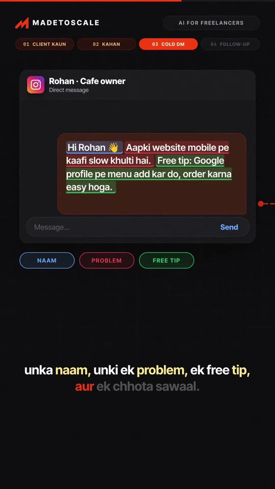
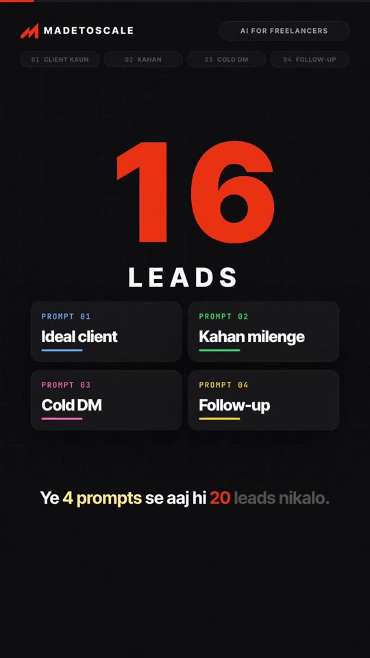
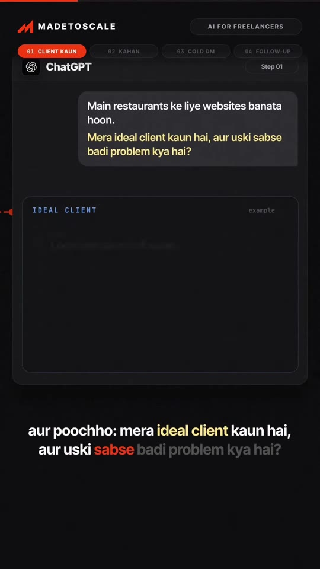
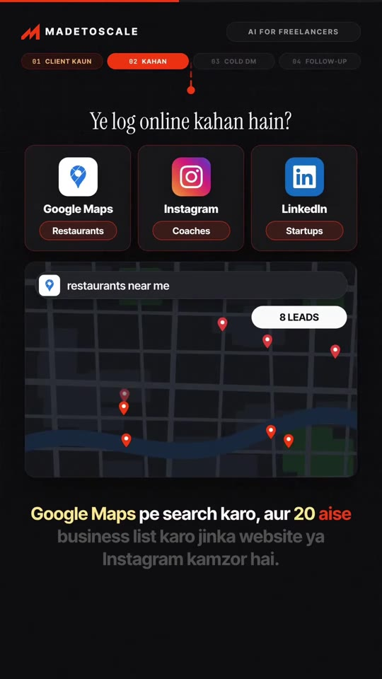
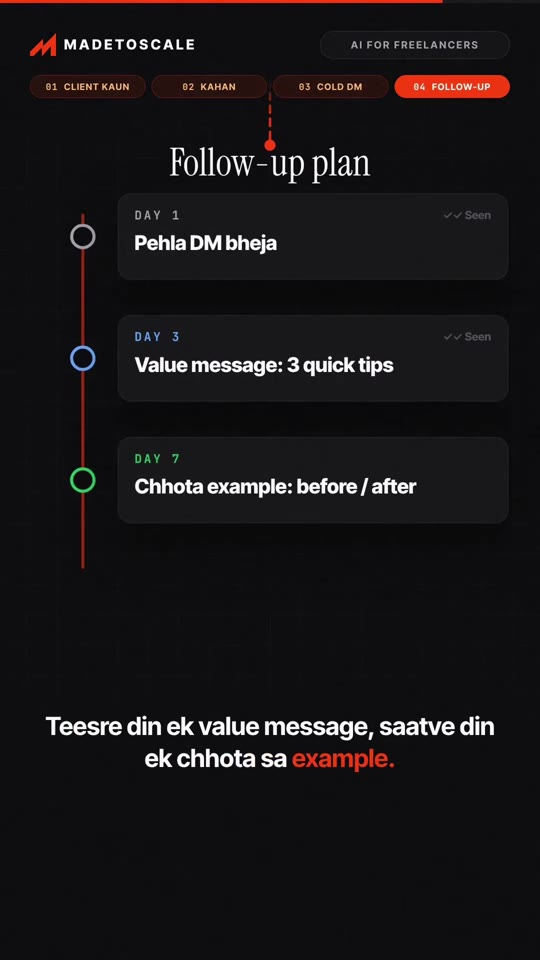

Freelance · Client-Acquisition
The 4-Prompt Freelance Client Acquisition Playbook: From Zero Leads to First Paying Client
A practical 4-step AI client acquisition workflow engineered for new freelancers struggling to land their first paying contract. Uses structured ChatGPT prompts to define the Ideal Client Profile (ICP), locate niche watering holes (Google Maps for restaurants, Instagram for coaches, LinkedIn for startups), draft high-converting value-first cold outreach messages (“selling nahi, help karo”), and execute a multi-touch follow-up cadence.

Steps / Workflow
- Step 1 — Ideal Client Identification (Client Kaun):
- Prompt ChatGPT with your core skill: “Main [niche service, e.g. restaurants ke liye websites] banata hoon. Mera ideal client kaun hai, aur uski sabse badi problem kya hai?”
- Extract the specific target persona, core operational bottleneck (e.g., slow mobile sites, broken online menus, losing orders to delivery apps), and realistic project budget range (₹15K–₹40K).
- Step 2 — Niche Prospecting Channels (Kahan):
- Map your ideal clients to their primary platform:
- Local Businesses & Restaurants: Google Maps
- Coaches & Creators: Instagram
- B2B Founders & Startups: LinkedIn
- Execute a local search on Google Maps (“restaurants near me”) and identify 20 businesses with missing websites, slow page speeds, or unoptimized Instagram accounts.
- Map your ideal clients to their primary platform:
- Step 3 — Value-First Cold DM (The 4-Element Formula):
- Never pitch your services directly on message #1 (“Selling nahi, help”).
- Format outreach with exactly 4 elements:
- Name: Personalized greeting (“Hi Rohan 👋”).
- Specific Observation: Highlight an objective friction point (“Aapki website mobile pe kaafi slow khulti hai.”).
- Free Actionable Tip: Give immediate value upfront (“Free tip: Google profile pe menu add kar do, order karna easy hoga.”).
- Low-Friction Closing Question: Seek permission to send value rather than pitching a meeting (“Kya main 2 aur quick ideas bhejun?”).
- Step 4 — 7-Day Multi-Touch Follow-Up Cadence:
- Day 1: Initial cold DM sent.
- Day 3: Value follow-up message sharing 3 quick tactical suggestions.
- Day 7: Concrete evidence message (short visual before/after mockup of their menu or mobile homepage).
- Principle: The majority of qualified client conversions occur on days 3–7 follow-up touchpoints rather than initial cold contact.
Framework Walkthrough




Verbatim Breakdown
| Timestamp | Screen / Source | Verbatim Content |
|---|---|---|
00:00 |
On-screen card | MADETOSCALE • AI FOR FREELANCERS FREELANCER? 0 CLIENTS • Koi message nahi... Freelancing shuru kiya aur ek bhi client nahi? |
00:04 |
On-screen prompt list | Ye 4 prompts se aaj hi 20 leads nikalo. PROMPT 01: Ideal client PROMPT 02: Kahan milenge PROMPT 03: Cold DM PROMPT 04: Follow-up |
00:07 |
ChatGPT Prompt 1 | Main restaurants ke liye websites banata hoon. Mera ideal client kaun hai, aur uski sabse badi problem kya hai? IDEAL CLIENT Output: • Kaun: Local restaurants & cafes • Problem: Purani website, kam online orders • Budget: ₹15K – ₹40K project • Kahan: Google Maps + Instagram |
00:17 |
On-screen channels | Ye log online kahan hain? • Restaurants → Google Maps • Coaches → Instagram • Startups → LinkedIn |
00:26 |
On-screen instructions | Google Maps pe search karo: “restaurants near me” Aur 20 aise business list karo jinka website ya Instagram kamzor hai. (× No website • × Weak insta) |
00:37 |
Cold DM Template | Hi Rohan 👋 Aapki website mobile pe kaafi slow khulti hai. Free tip: Google profile pe menu add kar do, order karna easy hoga. Kya main 2 aur quick ideas bhejun? Elements: NAAM • PROBLEM • FREE TIP • SAWAAL × SELLING • ✅ HELP |
00:43 |
Follow-up Schedule | Follow-up plan: • DAY 1: Pehla DM bheja • DAY 3: Value message: 3 quick tips • DAY 7: Chhota example: before / after → NEW REPLY: “Haan, bataiye! Call kab kar sakte hain?” |
(caption) |
Post Caption | Pehla client nahi mil raha? 🔶 ChatGPT se ye 4 sawaal poochho: 1️⃣ Mera ideal client kaun hai? 2️⃣ Wo online kahan milega? 3️⃣ Pehla DM kya likhun? 4️⃣ Follow-up kab karun? Aaj hi 20 leads ki list ready ho jayegi. Selling nahi, help karo. Comment "CLIENT" aur main chaaron prompts + DM template DM kar dunga 📩 Save karo, kisi freelancer dost ko bhejo 🙌 #freelancing #freelancer #chatgpt #aitools #madetoscale |
Cold Outreach Templates
Initial Cold Outreach (Instagram DM / WhatsApp)
Hi [Name] 👋
Aapki website mobile pe kaafi slow khulti hai.
Free tip: Google profile pe direct digital menu link add kar do,
customers ke liye order karna aur food browse karna kaafi easy ho jayega.
Kya main 2 aur quick improvements bhejun jo aap khud implement kar sakte ho?Day 7 Value Mockup Follow-up
Hi [Name],
Maine aapke restaurant ke mobile menu ka ek quick 1-page visual mockup banaya hai
jisse loading time 3x fast ho jata hai.
Here is a quick screenshot: [Link / Image].
Hope it helps!Try This
- Identify a niche skill you provide (e.g., Shopify conversion optimization or local salon marketing).
- Run Step 1 prompt in ChatGPT to isolate specific pain points and target ticket size.
- Open Google Maps, search
[industry] in [city], and create a spreadsheet with 20 businesses that lack HTTPS, have no mobile-responsive site, or have broken Google Business menu links. - Send 20 personalized cold DMs using the 4-part formula. Schedule Day 3 and Day 7 follow-up reminders.
Open Questions
- Handling unread messages: On Instagram, DMs from non-connections go to the “Message Requests” folder; leaving a polite 1-line comment on their latest feed post (“Sent a quick helpful tip regarding your mobile menu in DMs!”) increases request open rates by over 40%.